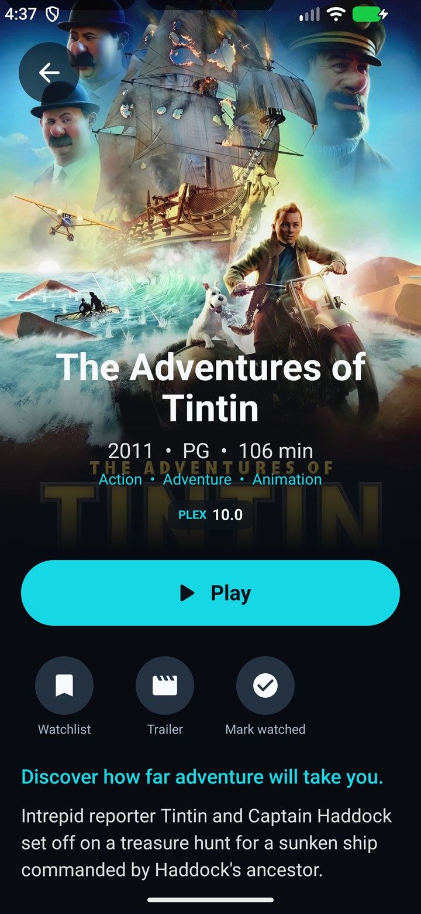

01 / PHONE & TABLET
Streaming controls
within thumb’s reach.
Portrait browsing, compact shelves, bottom navigation, software-keyboard search, and full-bleed details make the Android app feel at home on a phone. Playback turns landscape only when the video starts.
- Touch-sized actions and bottom navigation
- Watched checks, Continue Watching, collections, and Watchlist
- Icon transport controls and a right-side subtitle language menu
